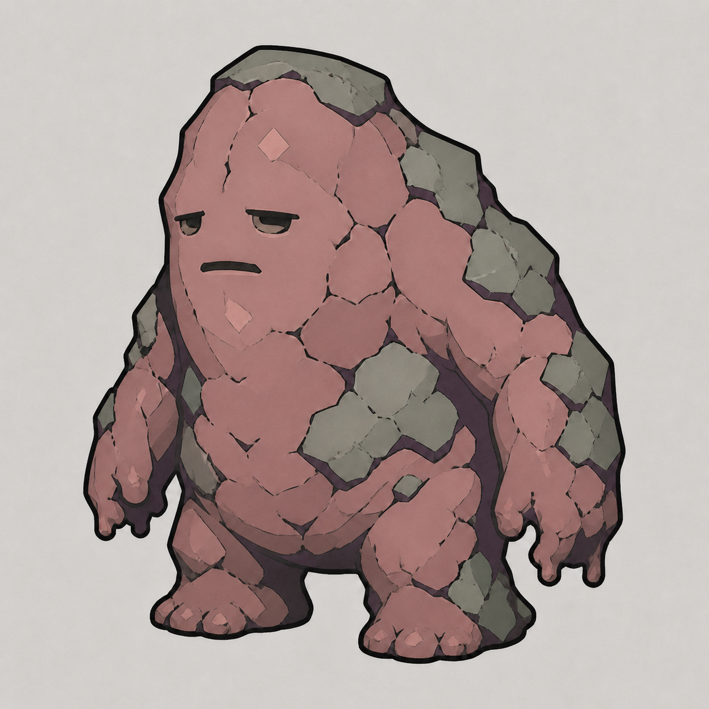
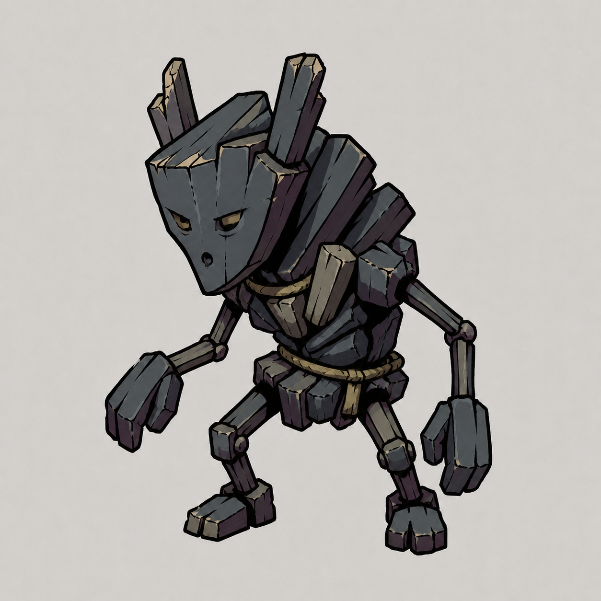

05 / 新稿保形改色陶泥团灰陶粉主体 × 灰青硬壳垂臂陶块与疲惫表情不变，只调整陶粉主体与灰青硬壳。查看大图 ↗对照：此前新稿造型（灰色配色）这是本任务重做的新设计，不是原版。保留它的造型，灰色配色不作为标准。
06 / 新稿保形改色煤灰仔烟蓝炭束 × 灰紫暗部木炭束、三角脸与细肢保持不变，不回到原版小恶魔。查看大图 ↗对照：此前新稿造型（灰色配色）这是本任务重做的新设计，不是原版。保留它的造型，灰色配色不作为标准。
07 / 新稿保形改色陶片兵灰青碎陶 × 暗砖红 × 烟紫织物破罐头、非对称罐口肩部、碎陶四肢与短刃保持不变。查看大图 ↗对照：此前新稿造型（灰色配色）这是本任务重做的新设计，不是原版。保留它的造型，灰色配色不作为标准。
09 / 新稿保形改色窑龛像烟紫陶壳 × 米白面手 × 灰蓝合掌、安静陶面、厚重陶壳与长围片保持不变。查看大图 ↗对照：此前新稿造型（灰色配色）这是本任务重做的新设计，不是原版。保留它的造型，灰色配色不作为标准。